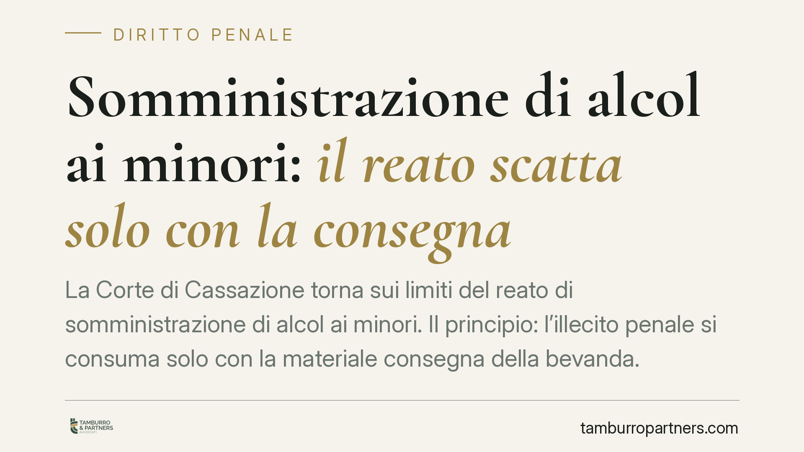

Somministrazione di alcol ai minori: il reato scatta solo con la consegna
La Corte di Cassazione torna sui limiti del reato di somministrazione di alcol ai minori. Il principio: l'illecito penale si consuma solo con la materiale consegna della bevanda. Se l'intervento delle forze dell'ordine blocca il drink prima della consegna, non c'è reato, perché per le contravvenzioni il tentativo non è punibile. Esclusa anche la responsabilità automatica del titolare per la condotta del dipendente.

Il caso
Un barista serve un minore di sedici anni. Le forze dell'ordine intervengono prima che la bevanda venga consegnata. Si configura comunque il reato di cui all'art. 689 del codice penale? La Cassazione ha risposto di no, con una decisione i cui estremi numerici sono in corso di verifica: riportiamo perciò i soli principi, senza attribuirli a un provvedimento identificato con certezza.
Inquadramento normativo
L'art. 689 c.p. punisce chi somministra bevande alcoliche a un minore di sedici anni o a persona affetta da infermità psichica. Si tratta di una contravvenzione, cioè un reato di gravità minore rispetto al delitto, punito con arresto o ammenda.
La disciplina va tenuta distinta su due piani.
- Piano penale: riguarda la somministrazione ai minori di sedici anni ed è governato dall'art. 689 c.p.
- Piano amministrativo: per la fascia tra sedici e diciotto anni la somministrazione e la vendita di alcolici sono comunque vietate, ma la violazione integra un illecito amministrativo, con relativa sanzione pecuniaria. Il divieto e la sanzione per gli under 18, insieme all'obbligo di richiedere un documento in caso di dubbio sull'età, derivano dall'art. 7 del D.L. 158/2012, convertito nella L. 189/2012.
Sono due binari differenti: sotto i sedici anni si entra nel penale; tra sedici e diciotto si resta nell'amministrativo. Confondere i due piani conduce a errori nella qualificazione della condotta.
Il principio: consumazione con la consegna
La Corte ha chiarito che il reato ex art. 689 c.p. si consuma nel momento della materiale consegna della bevanda al minore. Prima di quel momento la condotta non è ancora penalmente rilevante.
Da qui la conseguenza sul tentativo. L'art. 56 c.p. disciplina il tentativo, cioè la punibilità di atti diretti in modo non equivoco a commettere un delitto che poi non si compie. La norma parla espressamente di delitto: il tentativo non è configurabile per le contravvenzioni. Poiché l'art. 689 c.p. è una contravvenzione, l'azione interrotta prima della consegna non è punibile a titolo di tentativo.
È questa la ragione per cui, nel caso esaminato, l'intervento della polizia che blocca il drink prima della consegna esclude il reato: manca l'evento consumativo e non c'è spazio per il tentativo.
La responsabilità del titolare
La Corte ha inoltre escluso una responsabilità penale automatica del titolare del locale per la condotta del dipendente.
Due i riferimenti. L'art. 27 della Costituzione sancisce il principio di personalità della responsabilità penale: si risponde di un fatto proprio, non di quello altrui per il solo fatto di ricoprire una posizione. L'art. 40, comma 2, c.p. prevede che non impedire un evento che si ha l'obbligo giuridico di impedire equivale a cagionarlo (la cosiddetta posizione di garanzia), ma tale responsabilità presuppone la prova di uno specifico obbligo e di una condotta omissiva concreta, non una imputazione automatica per il ruolo rivestito.
In altri termini: il titolare non risponde solo perché è il titolare. Occorre che gli si possa addebitare una condotta personale, attiva od omissiva, giuridicamente rilevante.
Implicazioni pratiche
Per il gestore di un pubblico esercizio la decisione ha effetti concreti.
Primo: la soglia penale scatta con la consegna al minore di sedici anni, non prima. Secondo: la responsabilità non si trasferisce meccanicamente dal dipendente al titolare. Terzo: resta comunque fermo l'illecito amministrativo per la somministrazione agli under 18, con sanzioni che colpiscono l'esercizio a prescindere dal profilo penale.
La cautela operativa, quindi, non diminuisce. Cambiano i presupposti della responsabilità penale personale, ma la disciplina amministrativa continua a esporre il locale a sanzioni significative.
Cosa fare in concreto
- Verifica sempre l'età in caso di dubbio, richiedendo un documento: è un obbligo di legge per la fascia 16-18.
- Forma il personale sulle due soglie (penale sotto i 16 anni, amministrativa tra 16 e 18) e documenta l'avvenuta formazione.
- Adotta procedure interne scritte su controllo dei documenti e rifiuto della somministrazione, per dimostrare la diligenza organizzativa.
- Conserva la prova delle istruzioni impartite ai dipendenti: è elemento utile a delimitare la responsabilità personale del titolare.
- Fatti assistere tempestivamente in caso di verbale o contestazione, distinguendo da subito il profilo penale da quello amministrativo.
---
Contributo informativo a cura di Tamburro & Partners Avvocati. Non costituisce parere legale.
Ogni condominio ha una storia a sé.
Se gestisci un'amministrazione e vuoi un confronto su una specifica questione condominiale, scrivi allo studio. Ti rispondiamo entro un giorno lavorativo.